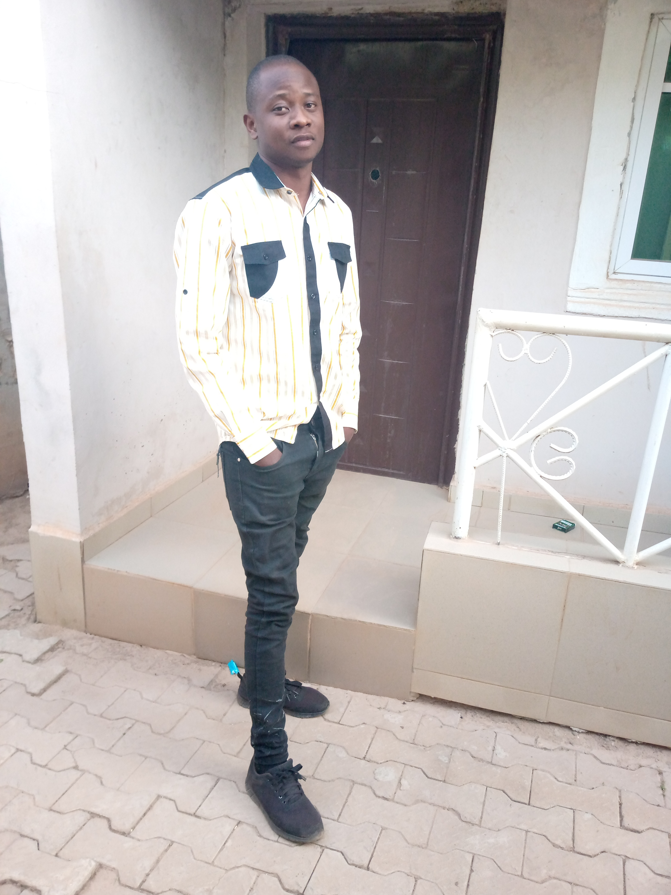

| HOME | EDUCATION | EXPERIENCES | QUALIFICATION | HOBBIES | FORM |
|  | Dikko JoshuaSenior Engineer PAN Learning Center |
I was born in the year 1990 in the town of kaduna chukun local government area trikania kaduna state, Nigeria. I spent my formative age playing and schooling, i then went to plateau state for my high school, graduated from federal government college jos in 2010. I then went to the Federal Univerisity of Technology Minna to study Electrical Engineering and i have some basic knowlege on different softwares.